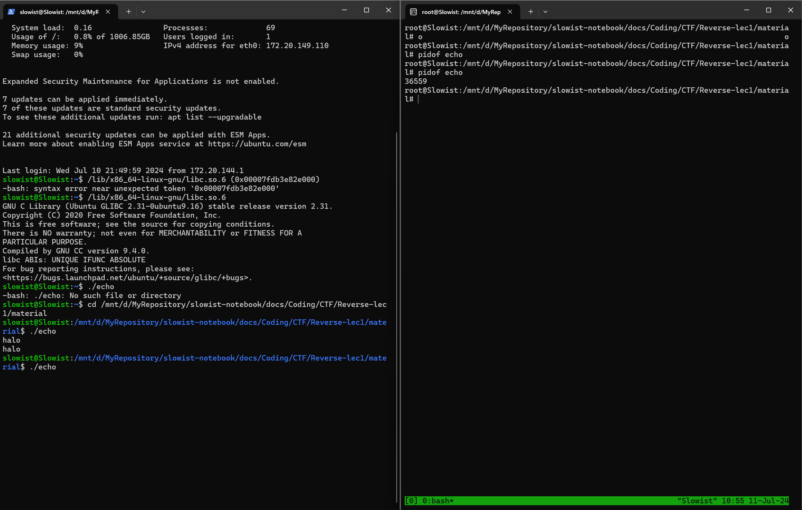
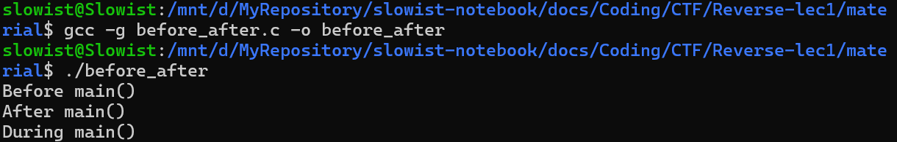
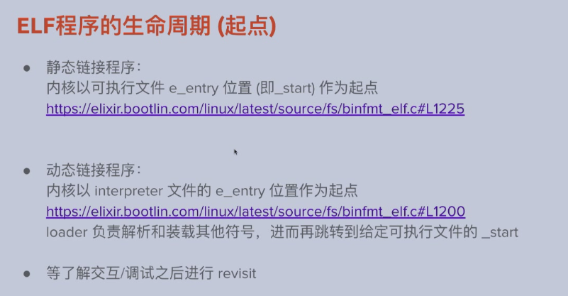
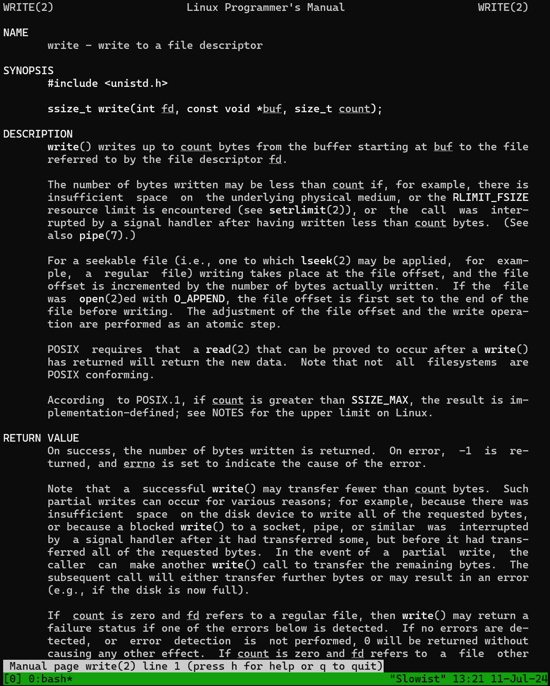
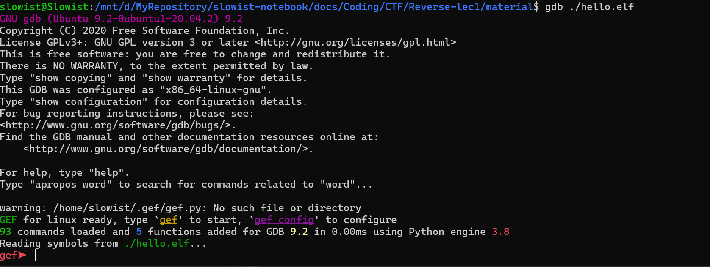
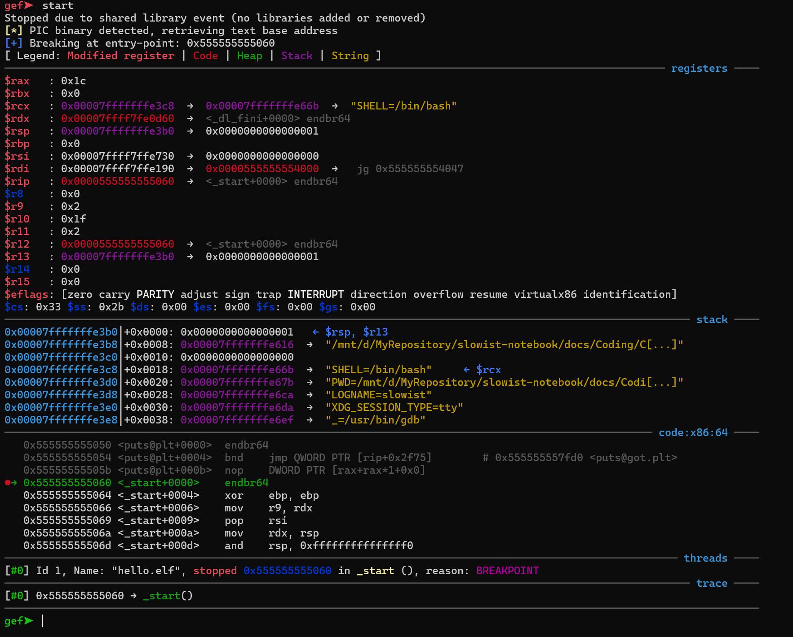
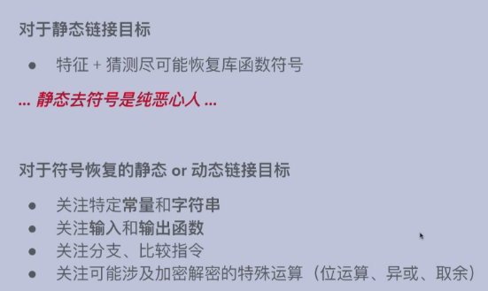
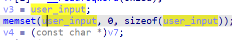
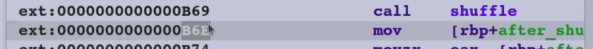
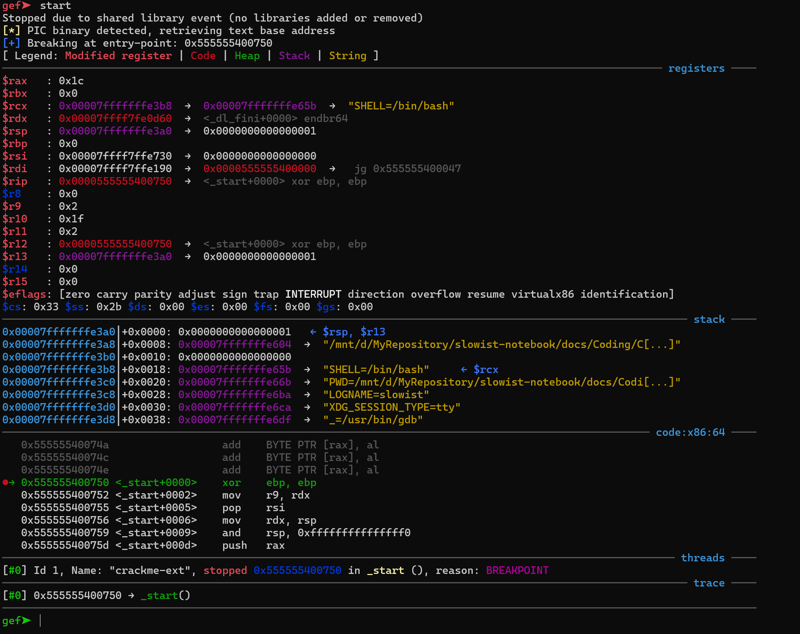

Pre. 一些基础操作留档
| Bash |
|---|
| slowist@Slowist:~$ cd mnt
-bash: cd: mnt: No such file or directory
slowist@Slowist:~$ cd /mnt
slowist@Slowist:/mnt$ cd /d
-bash: cd: /d: No such file or directory
slowist@Slowist:/mnt$ ls
c d wsl wslg
slowist@Slowist:/mnt$ cd d
slowist@Slowist:/mnt/d$ cd Desktop
slowist@Slowist:/mnt/d/Desktop$ cd material
|
1. 编译过程
高级语言(e.g. C)→ 编译→ 汇编语言 → 汇编 → 机器指令
具体过程：
高级语言→AST→IR→汇编语言→机器指令
被逆的程序：
大部分是用户态可执行文件：
windows→ exe（executable)
MAC→ Mach-O
Linus→ELF
ELF文件：Linux可执行文件：
通过命令行工具检视ELF:
- file 命令：通过文件头，告知文件的格式
示例：
| Bash |
|---|
| root@Slowist:/mnt/d/MyRepository# file crackme
crackme: ELF 64-bit LSB executable, x86-64, version 1 (GNU/Linux), statically linked, for GNU/Linux 3.2.0, BuildID[sha1]=060e34d6bba086370bf6201e765f5c82761c9290, with debug_info, not stripped
|
| Bash |
|---|
| objdump -d crackme
......
......
4114e3: 75 f3 jne 4114d8 <__malloc_info.part.9+0x148>
4114e5: 48 89 f8 mov %rdi,%rax
4114e8: 49 01 d1 add %rdx,%r9
4114eb: 48 89 79 08 mov %rdi,0x8(%rcx)
4114ef: 48 0f af c2 imul %rdx,%rax
......
......
|
由于crackme是静态执行文件，所以这个程序特别长x
- 如果只想输出
main函数，可以用objdump -d crackme | less
- 也可以用
IDA等工具
2. ELF的编译、链接
2.1 利用编译器编译c代码：
编译器会默认输出一个a.out文件，执行ls命令可以看到：
| Bash |
|---|
| ls
a.out before_after.c crackme crackme-ext echo.c hello.c program.elf
|
这个时候执行: ./a.out
| Bash |
|---|
| root@Slowist:/mnt/d/MyRepository/slowist-notebook/docs/Coding/CTF/Reverse-lec1/Material# ./a.out
Hello World!
|
也可以选择指定输出文件名和文件类型：
| Bash |
|---|
| gcc hello.c -o hello.elf
./hello.elf
Hello World!
|
clang也是一个编译器，也可以进行类似的操作：
| Bash |
|---|
| clang hello.c -o hello.elf
./hello.elf
Hello World!
|
2.2 ELF的编译（预处理）
2.2.1 预处理
| Bash |
|---|
| gcc/clang -E hello.c -o hello.c.i
code hello.c.i
|
文件内容如下：
| Bash |
|---|
| # 1 "hello.c"
# 1 "<built-in>" 1
# 1 "<built-in>" 3
# 341 "<built-in>" 3
# 1 "<command line>" 1
# 1 "<built-in>" 2
# 1 "hello.c" 2
# 1 "/usr/include/stdio.h" 1 3 4
# 27 "/usr/include/stdio.h" 3 4
# 1 "/usr/include/x86_64-linux-gnu/bits/libc-header-start.h" 1 3 4
# 33 "/usr/include/x86_64-linux-gnu/bits/libc-header-start.h" 3 4
......
|
则会显示头文件包含的信息，进行了宏展开与替换
-> 写了4行，预处理完812行
2.2.2 编译
| Bash |
|---|
| gcc/clang -S hello.c -o hello.s
|
我们code hello.s
| Text Only |
|---|
| ......
......
......
main:
.LFB0:
.cfi_startproc
endbr64
pushq %rbp
.cfi_def_cfa_offset 16
.cfi_offset 6, -16
movq %rsp, %rbp
.cfi_def_cfa_register 6
subq $16, %rsp
movl %edi, -4(%rbp)
movq %rsi, -16(%rbp)
leaq .LC0(%rip), %rdi
call puts@PLT
movl $0, %eax
leave
.cfi_def_cfa 7, 8
ret
.cfi_endproc
......
......
......
|
2.2.3 抽象代码树
| Bash |
|---|
| clang -Xclang -ast-dump -S hello.c
|
输出了hello.c的抽象代码树：
| Text Only |
|---|
| TranslationUnitDecl 0x16dc7e8 <<invalid sloc>> <invalid sloc>
|-TypedefDecl 0x16dd080 <<invalid sloc>> <invalid sloc> implicit __int128_t '__int128'
| `-BuiltinType 0x16dcd80 '__int128'
|-TypedefDecl 0x16dd0f0 <<invalid sloc>> <invalid sloc> implicit __uint128_t 'unsigned __int128'
| `-BuiltinType 0x16dcda0 'unsigned __int128'
|-TypedefDecl 0x16dd3f8 <<invalid sloc>> <invalid sloc> implicit __NSConstantString 'struct __NSConstantString_tag'
| `-RecordType 0x16dd1d0 'struct __NSConstantString_tag'
| `-Record 0x16dd148 '__NSConstantString_tag'
|-TypedefDecl 0x16dd490 <<invalid sloc>> <invalid sloc> implicit __builtin_ms_va_list 'char *'
| `-PointerType 0x16dd450 'char *'
| `-BuiltinType 0x16dc880 'char'
|-TypedefDecl 0x16dd788 <<invalid sloc>> <invalid sloc> implicit referenced __builtin_va_list 'struct __va_list_tag [1]'
| `-ConstantArrayType 0x16dd730 'struct __va_list_tag [1]' 1
| `-RecordType 0x16dd570 'struct __va_list_tag'
| `-Record 0x16dd4e8 '__va_list_tag'
|-TypedefDecl 0x1753768 </usr/lib/llvm-10/lib/clang/10.0.0/include/stddef.h:46:1, col:23> col:23 referenced size_t 'unsigned long'
| `-BuiltinType 0x16dc9a0 'unsigned long'
......
......
......
//we can see hello.c here!
`-FunctionDecl 0x1787500 <hello.c:3:1, line:7:1> line:3:5 main 'int (int, char **)'
|-ParmVarDecl 0x17872f8 <col:10, col:14> col:14 argc 'int'
|-ParmVarDecl 0x17873e0 <col:20, col:31> col:26 argv 'char **':'char **'
`-CompoundStmt 0x1787718 <line:4:1, line:7:1>
|-CallExpr 0x1787690 <line:5:2, col:25> 'int'
| |-ImplicitCastExpr 0x1787678 <col:2> 'int (*)(const char *, ...)' <FunctionToPointerDecay>
| | `-DeclRefExpr 0x17875b0 <col:2> 'int (const char *, ...)' Function 0x1776eb0 'printf' 'int (const cha ...
......
......
|
这条命令可以看到真正的llvm代码树：
| Bash |
|---|
| clang -emit-llvm hello.c -c -o hello.bc
|
| Text Only |
|---|
| ; ModuleID = 'hello.c'
source_filename = "hello.c"
target datalayout = "e-m:e-p270:32:32-p271:32:32-p272:64:64-i64:64-f80:128-n8:16:32:64-S128"
target triple = "x86_64-pc-linux-gnu"
@.str = private unnamed_addr constant [14 x i8] c"Hello World!\0A\00", align 1
; Function Attrs: noinline nounwind optnone uwtable
define dso_local i32 @main(i32 %0, i8** %1) #0 {
%3 = alloca i32, align 4
%4 = alloca i32, align 4
%5 = alloca i8**, align 8
store i32 0, i32* %3, align 4
store i32 %0, i32* %4, align 4
store i8** %1, i8*** %5, align 8
%6 = call i32 (i8*, ...) @printf(i8* getelementptr inbounds ([14 x i8], [14 x i8]* @.str, i64 0, i64 0))
ret i32 0
}
declare dso_local i32 @printf(i8*, ...) #1
attributes #0 = { noinline nounwind optnone uwtable "correctly-rounded-divide-sqrt-fp-math"="false" "disable-tail-calls"="false" "frame-pointer"="all" "less-precise-fpmad"="false" "min-legal-vector-width"="0" "no-infs-fp-math"="false" "no-jump-tables"="false" "no-nans-fp-math"="false" "no-signed-zeros-fp-math"="false" "no-trapping-math"="false" "stack-protector-buffer-size"="8" "target-cpu"="x86-64" "target-features"="+cx8,+fxsr,+mmx,+sse,+sse2,+x87" "unsafe-fp-math"="false" "use-soft-float"="false" }
attributes #1 = { "correctly-rounded-divide-sqrt-fp-math"="false" "disable-tail-calls"="false" "frame-pointer"="all" "less-precise-fpmad"="false" "no-infs-fp-math"="false" "no-nans-fp-math"="false" "no-signed-zeros-fp-math"="false" "no-trapping-math"="false" "stack-protector-buffer-size"="8" "target-cpu"="x86-64" "target-features"="+cx8,+fxsr,+mmx,+sse,+sse2,+x87" "unsafe-fp-math"="false" "use-soft-float"="false" }
!llvm.module.flags = !{!0}
!llvm.ident = !{!1}
!0 = !{i32 1, !"wchar_size", i32 4}
!1 = !{!"clang version 10.0.0-4ubuntu1 "}
|
2.2.4 从IR到汇编
从LLVM IR到汇编代码：
这时打开hello.s 和-S是一样的
2.2.5 从汇编到目标文件
对于clang而言：
| Bash |
|---|
| llvm-mc -filetype=obj hello.s -o hello.o
|
对于gcc而言：

混用会怎么样？见reverse-lab1
补充
clang -save-temps hello.c -o hello.elf
这会保留其中的过程文件，例如：
| Bash |
|---|
| slowist@Slowist:/mnt/d/MyRepository/slowist-notebook/docs/Coding/CTF/Reverse-lec1/material/temp$ clang -save-temps hello.c -o hello.elf
slowist@Slowist:/mnt/d/MyRepository/slowist-notebook/docs/Coding/CTF/Reverse-lec1/material/temp$ ls
hello.bc hello.c hello.elf hello.i hello.o hello.s
slowist@Slowist:/mnt/d/MyRepository/slowist-notebook/docs/Coding/CTF/Reverse-lec1/material/temp$
|
出现了：
hello.bc hello.c hello.elf hello.i hello.o hello.s 一系列过程文件。
2.3 ELF的链接
我们使用objdump命令来看一看汇编码：
输出如下：
| Bash |
|---|
| root@Slowist:/mnt/d/MyRepository/slowist-notebook/docs/Coding/CTF/Reverse-lec1/material# objdump -s hellogcc.o
hellogcc.o: file format elf64-x86-64
Contents of section .text:
0000 f30f1efa 554889e5 4883ec10 897dfc48 ....UH..H....}.H
0010 8975f048 8d3d0000 0000e800 000000b8 .u.H.=..........
0020 00000000 c9c3 ......
Contents of section .rodata:
0000 48656c6c 6f20576f 726c6421 00 Hello World!.
Contents of section .comment:
0000 00474343 3a202855 62756e74 7520392e .GCC: (Ubuntu 9.
0010 342e302d 31756275 6e747531 7e32302e 4.0-1ubuntu1~20.
0020 30342e32 2920392e 342e3000 04.2) 9.4.0.
Contents of section .note.gnu.property:
0000 04000000 10000000 05000000 474e5500 ............GNU.
0010 020000c0 04000000 03000000 00000000 ................
Contents of section .eh_frame:
0000 14000000 00000000 017a5200 01781001 .........zR..x..
0010 1b0c0708 90010000 1c000000 1c000000 ................
0020 00000000 26000000 00450e10 8602430d ....&....E....C.
0030 065d0c07 08000000 .]......
|
rodata: read-only-data, 只读的数据段，专门开辟一段来存放数据
代码和数据会分开放置
来看看编译的源代码：
| Bash |
|---|
| root@Slowist:/mnt/d/MyRepository/slowist-notebook/docs/Coding/CTF/Reverse-lec1/material# objdump -S helloclang.o
helloclang.o: file format elf64-x86-64
Disassembly of section .text:
0000000000000000 <main>:
0: 55 push %rbp
1: 48 89 e5 mov %rsp,%rbp
4: 48 83 ec 20 sub $0x20,%rsp
8: c7 45 fc 00 00 00 00 movl $0x0,-0x4(%rbp)
f: 89 7d f8 mov %edi,-0x8(%rbp)
12: 48 89 75 f0 mov %rsi,-0x10(%rbp)
16: 48 bf 00 00 00 00 00 movabs $0x0,%rdi
1d: 00 00 00
20: b0 00 mov $0x0,%al
22: e8 00 00 00 00 callq 27 <main+0x27>
27: 31 c9 xor %ecx,%ecx
29: 89 45 ec mov %eax,-0x14(%rbp)
2c: 89 c8 mov %ecx,%eax
2e: 48 83 c4 20 add $0x20,%rsp
32: 5d pop %rbp
33: c3 retq
|
可以发现这里暂时callq 27 <main+0x27>, call了一个内容，这部分函数需要重定向
而关于程序中的链接：
-v 指令可以帮我们看 gcc 编译过程中将会链接什么(从课堂的演示中可以看出链接非常非常多)
 链接的数量庞大，因此速度就会有快有慢
在终端输入
链接的数量庞大，因此速度就会有快有慢
在终端输入ld, 并且按Tab两次，来看ld相关的程序：
| Bash |
|---|
| root@Slowist:/mnt/d/MyRepository/slowist-notebook/docs/Coding/CTF/Reverse-lec1/material# ld
ld ld.exe ldattach ldd
ld.bfd ld.gold ldconfig ldrdf
ld.bfd.exe ld.gold.exe ldconfig.real
|
ld因此也是程序执行速度的一个关键
2.4 静态链接和动态链接
图解：

静态链接： statically linked ：每一个执行printf的程序都链接一遍；
动态链接：dynamically linked, 所有的printf链接同一个来源
可以通过file命令来看是静态/动态链接：
例如：
| Bash |
|---|
| slowist@Slowist:/mnt/d/Desktop/material$ file crackme
crackme: ELF 64-bit LSB executable, x86-64, version 1 (GNU/Linux), statically linked, for GNU/Linux 3.2.0, BuildID[sha1]=060e34d6bba086370bf6201e765f5c82761c9290, with debug_info, not stripped
|
如果想要人为用静态链接，可以输入如下命令
gcc hello.c -static -o hello.static
静态链接更占内存，但是跑的更快一些, 通过命令可以看到，我们仅仅是printf("hello world!\n) 这一条命令，就会多占好几倍的内存
我们使用 objdump -d <filename> |less 命令来比较相应的main函数：
| Text Only |
|---|
| 0000000000401130 <main>:
......
......
401150: b0 00 mov $0x0,%al
401152: e8 d9 fe ff ff callq 401030 <printf@plt>
401157: 31 c9 xor %ecx,%ecx
......
......
|
<printf@plt> 是动态链接实现的细节，我们可以到前面的提示 401030 去看这个函数的实现：
| Text Only |
|---|
| 0000000000401030 <printf@plt>:
401030: ff 25 e2 2f 00 00 jmpq *0x2fe2(%rip) # 404018 <printf@GLIBC_2.2.5>
401036: 68 00 00 00 00 pushq $0x0
40103b: e9 e0 ff ff ff jmpq 401020 <.plt>
|

静态连接程序直接到对应位置，动态连接程序会先到plt的一个跳板
2.5 GNU LIBC 和 LD
hello.elf是我们之前生成过的，动态链接的可执行程序
| Bash |
|---|
| file hello.elf
hello.elf: ELF 64-bit LSB executable, x86-64, version 1 (SYSV), dynamically linked, interpreter /lib64/ld-linux-x86-64.so.2, BuildID[sha1]=6040119ff90180bb28ea220b5fa749db43492472, for GNU/Linux 3.2.0, not stripped
|
- 利用
ldd命令可以查看hello.elf链接了多少程序
| Bash |
|---|
| ldd hello.elf
linux-vdso.so.1 (0x00007ffe5c9cc000)
libc.so.6 => /lib/x86_64-linux-gnu/libc.so.6 (0x00007fdb3e82e000)
/lib64/ld-linux-x86-64.so.2 (0x00007fdb3ea33000)
|
可以发现链接了一个libc.so.6, 事实上，平时调用的头文件，如stdio.h,stdlib.h,string.h 都包含在libc内，是最重要的库函数
我们直接运行/lib/x86_64-linux-gnu/libc.so.6 (0x00007fdb3e82e000) 来进一步认识：
| Bash |
|---|
| slowist@Slowist:~$ /lib/x86_64-linux-gnu/libc.so.6
GNU C Library (Ubuntu GLIBC 2.31-0ubuntu9.16) stable release version 2.31.
Copyright (C) 2020 Free Software Foundation, Inc.
This is free software; see the source for copying conditions.
There is NO warranty; not even for MERCHANTABILITY or FITNESS FOR A
PARTICULAR PURPOSE.
Compiled by GNU CC version 9.4.0.
libc ABIs: UNIQUE IFUNC ABSOLUTE
For bug reporting instructions, please see:
<https://bugs.launchpad.net/ubuntu/+source/glibc/+bugs>.
|
GNU C Library (Ubuntu GLIBC 2.31-0ubuntu9.16) stable release version 2.31 这一行告诉我们了libc的版本号，往往如果要劫持某个程序，就让plt跳转到错误的函数地址，就应该查看libc找到对应的地址，然后将它设置到那个位置
ldd命令的最后一行：/lib64/ld-linux-x86-64.so.2 ，是程序的加载器，系统的loaden，设置内存、堆栈、环境变量等。事实上，是ld-linux-x86-64-so.2在执行程序：
./hello.elf → /lib64/ld-ld-linux-x86-64.so.2 ./hello.elf
3 ELF程序的装载和运行
- 可执行程序是静态的，是文件；进程是动态的。
以
echo.c举例，我们的echo.c是动态链接程序，所以我们先来看一段动态链接
| Bash |
|---|
| root@Slowist:/mnt/d/MyRepository/slowist-notebook/docs/Coding/CTF/Reverse-lec1/material# cat echo.c
|
| C |
|---|
| // gcc -g echo.c -o echo
#include <stdio.h>
int main(int argc, char *argv[])
{
char data[32];
scanf("%32s", data);
printf("%s\n", data);
return 0;
}
|
我们使用gcc -g -o echo echo.c 来生成一个带有调试信息的可执行文件，接着我们用pidof echo来看它的进程号
使用tmux在一个终端窗口中创建多个分屏，并独立运行不同的会话。在./echo的时候使用pidof看进程号：

我们cd到对应的进程中去看：
| Bash |
|---|
| cd /proc/36559
root@Slowist:/proc/36559# ls
arch_status cwd map_files oom_score setgroups timens_offsets
attr environ maps oom_score_adj smaps timers
auxv exe mem pagemap smaps_rollup timerslack_ns
cgroup fd mountinfo personality stack uid_map
clear_refs fdinfo mounts projid_map stat wchan
cmdline gid_map mountstats root statm
comm io net sched status
coredump_filter limits ns schedstat syscall
cpuset loginuid oom_adj sessionid task
|
其中：maps是内存映射文件，我们利用cat maps来看一下文件内容：
| Bash |
|---|
| root@Slowist:/proc/36559# cat maps
55cd38ee4000-55cd38ee5000 r--p 00000000 00:55 844424930446933 /mnt/d/MyRepository/slowist-notebook/docs/Coding/CTF/Reverse-lec1/material/echo
55cd38ee5000-55cd38ee6000 r-xp 00001000 00:55 844424930446933 /mnt/d/MyRepository/slowist-notebook/docs/Coding/CTF/Reverse-lec1/material/echo
55cd38ee6000-55cd38ee7000 r--p 00002000 00:55 844424930446933 /mnt/d/MyRepository/slowist-notebook/docs/Coding/CTF/Reverse-lec1/material/echo
55cd38ee7000-55cd38ee8000 r--p 00002000 00:55 844424930446933 /mnt/d/MyRepository/slowist-notebook/docs/Coding/CTF/Reverse-lec1/material/echo
55cd38ee8000-55cd38ee9000 rw-p 00003000 00:55 844424930446933 /mnt/d/MyRepository/slowist-notebook/docs/Coding/CTF/Reverse-lec1/material/echo
|
我们分析其中一个进程：
e.g.
55cd38ee4000-55cd38ee5000 r--p 00000000 00:55 844424930446933 /mnt/d/MyRepository/slowist-notebook/docs/Coding/CTF/Reverse-lec1/material/echo
55cd38ee4000-55cd38ee5000真正的地址空间r--p: 权限：可读844424930446933 /mnt/d/MyRepository/slowist-notebook/docs/Coding/CTF/Reverse-lec1/material/echo 映射的文件地址
所以maps表明我们程序在执行的时候，按照权限的不同，将文件映射到不同的内存段里。譬如下面的权限：
- r-xp ：可执行，代码段事实上在这里执行
- rw-p：可修改，事实上存放数据段
在程序的下面，maps还包含这些：
| Bash |
|---|
| 55cd3a835000-55cd3a856000 rw-p 00000000 00:00 0 [heap]
7f611cc7b000-7f611cc9d000 r--p 00000000 08:20 20040 /usr/lib/x86_64-linux-gnu/libc-2.31.so
7f611cc9d000-7f611ce15000 r-xp 00022000 08:20 20040 /usr/lib/x86_64-linux-gnu/libc-2.31.so
7f611ce15000-7f611ce63000 r--p 0019a000 08:20 20040 /usr/lib/x86_64-linux-gnu/libc-2.31.so
7f611ce63000-7f611ce67000 r--p 001e7000 08:20 20040 /usr/lib/x86_64-linux-gnu/libc-2.31.so
7f611ce67000-7f611ce69000 rw-p 001eb000 08:20 20040 /usr/lib/x86_64-linux-gnu/libc-2.31.so
7f611ce69000-7f611ce6f000 rw-p 00000000 00:00 0
7f611ce80000-7f611ce81000 r--p 00000000 08:20 19959 /usr/lib/x86_64-linux-gnu/ld-2.31.so
7f611ce81000-7f611cea4000 r-xp 00001000 08:20 19959 /usr/lib/x86_64-linux-gnu/ld-2.31.so
7f611cea4000-7f611ceac000 r--p 00024000 08:20 19959 /usr/lib/x86_64-linux-gnu/ld-2.31.so
7f611cead000-7f611ceae000 r--p 0002c000 08:20 19959 /usr/lib/x86_64-linux-gnu/ld-2.31.so
7f611ceae000-7f611ceaf000 rw-p 0002d000 08:20 19959 /usr/lib/x86_64-linux-gnu/ld-2.31.so
7f611ceaf000-7f611ceb0000 rw-p 00000000 00:00 0
7ffc02a61000-7ffc02a82000 rw-p 00000000 00:00 0 [stack]
7ffc02b65000-7ffc02b69000 r--p 00000000 00:00 0 [vvar]
7ffc02b69000-7ffc02b6b000 r-xp 00000000 00:00 0 [vdso]
|
- 这就是我们的
libc和ld,存放有我们需要调用的例如printf函数等等
- 我们因此看到，进程中全部需要的东西，都在内存空间中
接着我们来看静态链接的程序的进程：
| Bash |
|---|
| slowist@Slowist:/mnt/d/MyRepository/slowist-notebook/docs/Coding/CTF/Reverse-lec1/material$ gcc -g echo.c -static -o echo.static
slowist@Slowist:/mnt/d/MyRepository/slowist-notebook/docs/Coding/CTF/Reverse-lec1/material$ file hello.static
hello.static: ELF 64-bit LSB executable, x86-64, version 1 (GNU/Linux), statically linked, BuildID[sha1]=939c915fb3fc59dc2451b31f25e1ce861c5aceef, for GNU/Linux 3.2.0, with debug_info, not stripped
|
在echo.static执行之后查看进程：
| Bash |
|---|
| root@Slowist:/proc/40520# pidof echo.static
40752
root@Slowist:/proc/40520# cd /proc/40752
root@Slowist:/proc/40752# ls
arch_status cwd map_files oom_score setgroups timens_offsets
attr environ maps oom_score_adj smaps timers
auxv exe mem pagemap smaps_rollup timerslack_ns
cgroup fd mountinfo personality stack uid_map
clear_refs fdinfo mounts projid_map stat wchan
cmdline gid_map mountstats root statm
comm io net sched status
coredump_filter limits ns schedstat syscall
cpuset loginuid oom_adj sessionid task
root@Slowist:/proc/40752# cat maps
00400000-00401000 r--p 00000000 00:55 562949953736279 /mnt/d/MyRepository/slowist-notebook/docs/Coding/CTF/Reverse-lec1/material/echo.static
00401000-004b3000 r-xp 00001000 00:55 562949953736279 /mnt/d/MyRepository/slowist-notebook/docs/Coding/CTF/Reverse-lec1/material/echo.static
004b3000-004db000 r--p 000b3000 00:55 562949953736279 /mnt/d/MyRepository/slowist-notebook/docs/Coding/CTF/Reverse-lec1/material/echo.static
004dc000-004df000 r--p 000db000 00:55 562949953736279 /mnt/d/MyRepository/slowist-notebook/docs/Coding/CTF/Reverse-lec1/material/echo.static
004df000-004e2000 rw-p 000de000 00:55 562949953736279 /mnt/d/MyRepository/slowist-notebook/docs/Coding/CTF/Reverse-lec1/material/echo.static
004e2000-004e3000 rw-p 00000000 00:00 0
01756000-01779000 rw-p 00000000 00:00 0 [heap]
7ffda5ce6000-7ffda5d07000 rw-p 00000000 00:00 0 [stack]
7ffda5dbd000-7ffda5dc1000 r--p 00000000 00:00 0 [vvar]
7ffda5dc1000-7ffda5dc3000 r-xp 00000000 00:00 0 [vdso]
|
我们会发现这时maps会少很多，少了动态链接中调用libc和ldd的过程。
Tips: 发现没有一个进程是既可写，又可执行的。因为攻击者如果在该进程写入恶意代码再执行，就非常危险
ps命令和ls命令类似，会告诉你在session中进行的进程
| Bash |
|---|
| slowist@Slowist:/$ ps
PID TTY TIME CMD
1014 pts/3 00:00:00 bash
1126 pts/3 00:00:00 ps
|
| Bash |
|---|
| slowist@Slowist:/$ ps -a
PID TTY TIME CMD
886 pts/1 00:00:00 bash
1128 pts/3 00:00:00 ps
|
3.2 ELF程序的生命周期
C/C++的程序对应进程的起点不是main,main结束后进程还没结束
可以利用constructor 执行初始化函数和清理函数
| C |
|---|
| slowist@Slowist:/mnt/d/MyRepository/slowist-notebook/docs/Coding/CTF/Reverse-lec1/material$ cat before_after.c
// gcc -g before_after.c -o before_after
#include <stdio.h>
#include <stdlib.h>
__attribute__((constructor)) void func1()
{
printf("Before main()\n");
}
int main(int argc, char *argv[])
{
printf("During main()\n");
}
__attribute__((constructor)) void func2()
{
printf("After main()\n");
}
|
在C语言中，使用__attribute__((constructor))可以让函数在main()函数之前执行。这个特性是GCC (GNU Compiler Collection) 提供的一个扩展，它允许开发者指定一些在程序开始执行之前需要运行的初始化函数。同样的，__attribute__((destructor))可以指定一些在程序结束时需要执行的清理函数。
执行效果：

程序的内部有真正的_start或者e_entry:
在动态程序中，先执行loader,再执行_start
IDA反编译，也会先回到_start

_start是一段写死的代码，在__libc_start_main中进行初始化。事实上真正的过程是，_start调用了__libc_start_main，__libc_start_main再调用了<main>函数，main函数结束调用了exit. 我们平时return 0, 就由这个函数来调用exit (当然如果你不想让它来exit,也可以在main函数中直接写exit)
3.3 基地址与ASLR
- 动态链接程序的安全性：动态连接程序利用了ASLR，让每次程序开始的地址都可以位于随机的一个值
我们利用刚刚学到的
pidof命令和查看maps文件来验证一下. 先运行./echo
| Bash |
|---|
| root@Slowist:/mnt/d/MyRepository/slowist-notebook/docs/Coding/CTF/Reverse-lec1/material# pidof echo
45845
root@Slowist:/mnt/d/MyRepository/slowist-notebook/docs/Coding/CTF/Reverse-lec1/material# cd /proc/45845
root@Slowist:/proc/45845# ls
arch_status cwd map_files oom_score setgroups timens_offsets
attr environ maps oom_score_adj smaps timers
auxv exe mem pagemap smaps_rollup timerslack_ns
cgroup fd mountinfo personality stack uid_map
clear_refs fdinfo mounts projid_map stat wchan
cmdline gid_map mountstats root statm
comm io net sched status
coredump_filter limits ns schedstat syscall
cpuset loginuid oom_adj sessionid task
root@Slowist:/proc/45845# cat maps
55c73c4f0000-55c73c4f1000 r--p 00000000 00:55 844424930446933 /mnt/d/MyRepository/slowist-notebook/docs/Coding/CTF/Reverse-lec1/material/echo
55c73c4f1000-55c73c4f2000 r-xp 00001000 00:55 844424930446933 /mnt/d/MyRepository/slowist-notebook/docs/Coding/CTF/Reverse-lec1/material/echo
55c73c4f2000-55c73c4f3000 r--p 00002000 00:55 844424930446933 /mnt/d/MyRepository/slowist-notebook/docs/Coding/CTF/Reverse-lec1/material/echo
55c73c4f3000-55c73c4f4000 r--p 00002000 00:55 844424930446933 /mnt/d/MyRepository/slowist-notebook/docs/Coding/CTF/Reverse-lec1/material/echo
55c73c4f4000-55c73c4f5000 rw-p 00003000 00:55 844424930446933 /mnt/d/MyRepository/slowist-notebook/docs/Coding/CTF/Reverse-lec1/material/echo
55c73d1fe000-55c73d21f000 rw-p 00000000 00:00 0 [heap]
7fa01786b000-7fa01788d000 r--p 00000000 08:20 20040 /usr/lib/x86_64-linux-gnu/libc-2.31.so
7fa01788d000-7fa017a05000 r-xp 00022000 08:20 20040 /usr/lib/x86_64-linux-gnu/libc-2.31.so
7fa017a05000-7fa017a53000 r--p 0019a000 08:20 20040 /usr/lib/x86_64-linux-gnu/libc-2.31.so
7fa017a53000-7fa017a57000 r--p 001e7000 08:20 20040 /usr/lib/x86_64-linux-gnu/libc-2.31.so
7fa017a57000-7fa017a59000 rw-p 001eb000 08:20 20040 /usr/lib/x86_64-linux-gnu/libc-2.31.so
7fa017a59000-7fa017a5f000 rw-p 00000000 00:00 0
7fa017a70000-7fa017a71000 r--p 00000000 08:20 19959 /usr/lib/x86_64-linux-gnu/ld-2.31.so
7fa017a71000-7fa017a94000 r-xp 00001000 08:20 19959 /usr/lib/x86_64-linux-gnu/ld-2.31.so
7fa017a94000-7fa017a9c000 r--p 00024000 08:20 19959 /usr/lib/x86_64-linux-gnu/ld-2.31.so
7fa017a9d000-7fa017a9e000 r--p 0002c000 08:20 19959 /usr/lib/x86_64-linux-gnu/ld-2.31.so
7fa017a9e000-7fa017a9f000 rw-p 0002d000 08:20 19959 /usr/lib/x86_64-linux-gnu/ld-2.31.so
7fa017a9f000-7fa017aa0000 rw-p 00000000 00:00 0
7ffc67cc0000-7ffc67ce1000 rw-p 00000000 00:00 0 [stack]
7ffc67ce4000-7ffc67ce8000 r--p 00000000 00:00 0 [vvar]
7ffc67ce8000-7ffc67cea000 r-xp 00000000 00:00 0 [vdso]
root@Slowist:/proc/45845#
|
得到程序运行的地址：55c73c4f0000-55c73c4f1000
接着我们kill 45845 ( 注意kill命令的使用： kill+ <PID> ), 重新运行这个程序看进程号
| Bash |
|---|
| root@Slowist:/proc/45845# kill 45845
root@Slowist:/proc/45845# pidof echo
45858
root@Slowist:/proc/45845# cd /proc/45858
root@Slowist:/proc/45858# ls
arch_status cwd map_files oom_score setgroups timens_offsets
attr environ maps oom_score_adj smaps timers
auxv exe mem pagemap smaps_rollup timerslack_ns
cgroup fd mountinfo personality stack uid_map
clear_refs fdinfo mounts projid_map stat wchan
cmdline gid_map mountstats root statm
comm io net sched status
coredump_filter limits ns schedstat syscall
cpuset loginuid oom_adj sessionid task
root@Slowist:/proc/45858# cat maps
557bfe753000-557bfe754000 r--p 00000000 00:55 844424930446933 /mnt/d/MyRepository/slowist-notebook/docs/Coding/CTF/Reverse-lec1/material/echo
557bfe754000-557bfe755000 r-xp 00001000 00:55 844424930446933 /mnt/d/MyRepository/slowist-notebook/docs/Coding/CTF/Reverse-lec1/material/echo
557bfe755000-557bfe756000 r--p 00002000 00:55 844424930446933 /mnt/d/MyRepository/slowist-notebook/docs/Coding/CTF/Reverse-lec1/material/echo
557bfe756000-557bfe757000 r--p 00002000 00:55 844424930446933 /mnt/d/MyRepository/slowist-notebook/docs/Coding/CTF/Reverse-lec1/material/echo
557bfe757000-557bfe758000 rw-p 00003000 00:55 844424930446933 /mnt/d/MyRepository/slowist-notebook/docs/Coding/CTF/Reverse-lec1/material/echo
557c00347000-557c00368000 rw-p 00000000 00:00 0 [heap]
7f7026bc2000-7f7026be4000 r--p 00000000 08:20 20040 /usr/lib/x86_64-linux-gnu/libc-2.31.so
7f7026be4000-7f7026d5c000 r-xp 00022000 08:20 20040 /usr/lib/x86_64-linux-gnu/libc-2.31.so
7f7026d5c000-7f7026daa000 r--p 0019a000 08:20 20040 /usr/lib/x86_64-linux-gnu/libc-2.31.so
7f7026daa000-7f7026dae000 r--p 001e7000 08:20 20040 /usr/lib/x86_64-linux-gnu/libc-2.31.so
7f7026dae000-7f7026db0000 rw-p 001eb000 08:20 20040 /usr/lib/x86_64-linux-gnu/libc-2.31.so
7f7026db0000-7f7026db6000 rw-p 00000000 00:00 0
7f7026dc7000-7f7026dc8000 r--p 00000000 08:20 19959 /usr/lib/x86_64-linux-gnu/ld-2.31.so
7f7026dc8000-7f7026deb000 r-xp 00001000 08:20 19959 /usr/lib/x86_64-linux-gnu/ld-2.31.so
7f7026deb000-7f7026df3000 r--p 00024000 08:20 19959 /usr/lib/x86_64-linux-gnu/ld-2.31.so
7f7026df4000-7f7026df5000 r--p 0002c000 08:20 19959 /usr/lib/x86_64-linux-gnu/ld-2.31.so
7f7026df5000-7f7026df6000 rw-p 0002d000 08:20 19959 /usr/lib/x86_64-linux-gnu/ld-2.31.so
7f7026df6000-7f7026df7000 rw-p 00000000 00:00 0
7ffd01406000-7ffd01427000 rw-p 00000000 00:00 0 [stack]
7ffd01479000-7ffd0147d000 r--p 00000000 00:00 0 [vvar]
7ffd0147d000-7ffd0147f000 r-xp 00000000 00:00 0 [vdso]
|
这次的地址就变成了557bfe753000-557bfe754000, 和55c73c4f0000-55c73c4f1000 不一样了。
- 静态地址的栈地址也有随机化的保护
- 关闭随机化保护：
/proc/sys/kernel/randomize_va_space_ 可以控制随机化
我们可以看一下当前的保护：
| Bash |
|---|
| root@Slowist:/proc/45858# cat /proc/sys/kernel/randomize_va_space
2
|
这是一个只读的模块，现在保护级别是2, 要想关闭这个保护，把它变成0即可 （但极其不建议这么做，很危险）
4. ELF 程序的交互、调试
4.1 交互
4.1.1 通过命令行人工与程序交互
shell执行：相对/绝对路径- Tips:
which命令可以让终端告诉我们，终端认为这个程序位于什么位置
| Bash |
|---|
| slowist@Slowist:/mnt/d/MyRepository/slowist-notebook/docs/Coding/CTF/Reverse-lec1/material$ which sh
/usr/bin/sh
|
4.1.2 通过虚拟机或者沙箱进行交互
LINUX上有提供一些很好的沙箱
- https://firejail.wordpress.com/
- https://github.com/google/nsjail
4.1.3 通过编程与程序交互
软保的lab0有一些介绍
- e.g. python的pwntools
python的os.system("<shell 命令>") 可以完成终端的操作，效果就是在终端执行相应的命令。
| Bash |
|---|
| In [1]: import os
In [3]: os.system("ls")
before_after echo hello.c hello.o helloclang.s program.elf
before_after.c echo.c hello.c.i hello.s hellogcc.o
crackme echo.static hello.elf hello.static hellogcc.s
crackme-ext hello hello.ll helloclang.o hellogccclang.o
Out[3]: 0
|
-> 相当于在终端执行了ls
4.2 调试
4.2.1 strace<race命令
使用方法: strace ./<filename>
| Bash |
|---|
| slowist@Slowist:/mnt/d/MyRepository/slowist-notebook/docs/Coding/CTF/Reverse-lec1/material$ strace ./hello.elf
execve("./hello.elf", ["./hello.elf"], 0x7ffc0ce78870 /* 27 vars */) = 0
brk(NULL) = 0x5f5000
arch_prctl(0x3001 /* ARCH_??? */, 0x7ffd7f78d200) = -1 EINVAL (Invalid argument)
access("/etc/ld.so.preload", R_OK) = -1 ENOENT (No such file or directory)
openat(AT_FDCWD, "/etc/ld.so.cache", O_RDONLY|O_CLOEXEC) = 3
fstat(3, {st_mode=S_IFREG|0644, st_size=66476, ...}) = 0
mmap(NULL, 66476, PROT_READ, MAP_PRIVATE, 3, 0) = 0x7f9d199d6000
close(3) = 0
openat(AT_FDCWD, "/lib/x86_64-linux-gnu/libc.so.6", O_RDONLY|O_CLOEXEC) = 3
read(3, "\177ELF\2\1\1\3\0\0\0\0\0\0\0\0\3\0>\0\1\0\0\0\300A\2\0\0\0\0\0"..., 832) = 832
pread64(3, "\6\0\0\0\4\0\0\0@\0\0\0\0\0\0\0@\0\0\0\0\0\0\0@\0\0\0\0\0\0\0"..., 784, 64) = 784
pread64(3, "\4\0\0\0\20\0\0\0\5\0\0\0GNU\0\2\0\0\300\4\0\0\0\3\0\0\0\0\0\0\0", 32, 848) = 32
pread64(3, "\4\0\0\0\24\0\0\0\3\0\0\0GNU\0\7\2C\n\357_\243\335\2449\206V>\237\374\304"..., 68, 880) = 68
fstat(3, {st_mode=S_IFREG|0755, st_size=2029592, ...}) = 0
mmap(NULL, 8192, PROT_READ|PROT_WRITE, MAP_PRIVATE|MAP_ANONYMOUS, -1, 0) = 0x7f9d199d4000
pread64(3, "\6\0\0\0\4\0\0\0@\0\0\0\0\0\0\0@\0\0\0\0\0\0\0@\0\0\0\0\0\0\0"..., 784, 64) = 784
pread64(3, "\4\0\0\0\20\0\0\0\5\0\0\0GNU\0\2\0\0\300\4\0\0\0\3\0\0\0\0\0\0\0", 32, 848) = 32
pread64(3, "\4\0\0\0\24\0\0\0\3\0\0\0GNU\0\7\2C\n\357_\243\335\2449\206V>\237\374\304"..., 68, 880) = 68
mmap(NULL, 2037344, PROT_READ, MAP_PRIVATE|MAP_DENYWRITE, 3, 0) = 0x7f9d197e2000
mmap(0x7f9d19804000, 1540096, PROT_READ|PROT_EXEC, MAP_PRIVATE|MAP_FIXED|MAP_DENYWRITE, 3, 0x22000) = 0x7f9d19804000
mmap(0x7f9d1997c000, 319488, PROT_READ, MAP_PRIVATE|MAP_FIXED|MAP_DENYWRITE, 3, 0x19a000) = 0x7f9d1997c000
mmap(0x7f9d199ca000, 24576, PROT_READ|PROT_WRITE, MAP_PRIVATE|MAP_FIXED|MAP_DENYWRITE, 3, 0x1e7000) = 0x7f9d199ca000
mmap(0x7f9d199d0000, 13920, PROT_READ|PROT_WRITE, MAP_PRIVATE|MAP_FIXED|MAP_ANONYMOUS, -1, 0) = 0x7f9d199d0000
close(3) = 0
arch_prctl(ARCH_SET_FS, 0x7f9d199d5540) = 0
mprotect(0x7f9d199ca000, 16384, PROT_READ) = 0
mprotect(0x403000, 4096, PROT_READ) = 0
mprotect(0x7f9d19a14000, 4096, PROT_READ) = 0
munmap(0x7f9d199d6000, 66476) = 0
fstat(1, {st_mode=S_IFCHR|0620, st_rdev=makedev(0x88, 0), ...}) = 0
brk(NULL) = 0x5f5000
brk(0x616000) = 0x616000
write(1, "Hello World!\n", 13Hello World!
) = 13
exit_group(0) = ?
+++ exited with 0 +++
|
execve("./hello.elf", ["./hello.elf"], 0x7ffc0ce78870 /* 27 vars */) = 0 brk(NULL) = 0x5f5000
将./hello.elf放入execve中调用
在执行printf的时候，我们看到系统执行了write(1, "Hello World!\n", 13Hello World!
每个语言都会有自己的write, 我们用man（manual）命令来看看write的手册/用法，是libc里的一个函数

相比之下, ltrace用的更多，ltrace仅用于动态链接的程序，返回动态调用的值（如果ltrace跑静态链接，会报错）
| Bash |
|---|
| slowist@Slowist:/mnt/d/MyRepository/slowist-notebook/docs/Coding/CTF/Reverse-lec1/material$ ltrace ./hello.elf
printf("Hello World!\n"Hello World!
) = 13
+++ exited (status 0) +++
|
4.2.2 gdb调试工具
安装之后，输入gdb ./<filename> ，即进入gdb调试模式:
| Bash |
|---|
| slowist@Slowist:/mnt/d/MyRepository/slowist-notebook/docs/Coding/CTF/Reverse-lec1/material$ gdb ./hello.elf
GNU gdb (Ubuntu 9.2-0ubuntu1~20.04.2) 9.2
Copyright (C) 2020 Free Software Foundation, Inc.
License GPLv3+: GNU GPL version 3 or later <http://gnu.org/licenses/gpl.html>
This is free software: you are free to change and redistribute it.
There is NO WARRANTY, to the extent permitted by law.
Type "show copying" and "show warranty" for details.
This GDB was configured as "x86_64-linux-gnu".
Type "show configuration" for configuration details.
For bug reporting instructions, please see:
<http://www.gnu.org/software/gdb/bugs/>.
Find the GDB manual and other documentation resources online at:
<http://www.gnu.org/software/gdb/documentation/>.
For help, type "help".
Type "apropos word" to search for commands related to "word"...
Reading symbols from ./hello.elf...
|
run命令：跑一遍程序
| Bash |
|---|
| (gdb) run
Starting program: /mnt/d/MyRepository/slowist-notebook/docs/Coding/CTF/Reverse-lec1/material/hello.elf
Hello World!
[Inferior 1 (process 46095) exited normally]
|
start命令：自动设置一个断点
| Bash |
|---|
| (gdb) start
Temporary breakpoint 1 at 0x555555555149: file hello.c, line 4.
Starting program: /mnt/d/MyRepository/slowist-notebook/docs/Coding/CTF/Reverse-lec1/material/hello.elf
Temporary breakpoint 1, main (argc=0, argv=0x7fffffffe360) at hello.c:4
4 {
|
continue，继续进行程序
| Bash |
|---|
| (gdb) continue
Continuing.
Hello World!
[Inferior 1 (process 46101) exited normally]
|
在断点上，我们可以查看一些相关信息：
查看当前的寄存器：
| Bash |
|---|
| (gdb) info registers
rax 0x555555555149 93824992235849
rbx 0x555555555170 93824992235888
rcx 0x555555555170 93824992235888
rdx 0x7fffffffe378 140737488348024
rsi 0x7fffffffe368 140737488348008
rdi 0x1 1
rbp 0x0 0x0
rsp 0x7fffffffe278 0x7fffffffe278
r8 0x0 0
r9 0x7ffff7fe0d60 140737354009952
r10 0x1f 31
r11 0x2 2
r12 0x555555555060 93824992235616
r13 0x7fffffffe360 140737488348000
r14 0x0 0
r15 0x0 0
rip 0x555555555149 0x555555555149 <main> eflags 0x246 [ PF ZF IF ]
cs 0x33 51
ss 0x2b 43
ds 0x0 0
es 0x0 0
fs 0x0 0
gs 0x0 0
(gdb)
|
查看当前的进程：比proc命令在另一个终端读方便一些
| Bash |
|---|
| (gdb) info proc mapping
process 46108
Mapped address spaces:
Start Addr End Addr Size Offset objfile
0x555555554000 0x555555555000 0x1000 0x0 /mnt/d/MyRepository/slowist-notebook/docs/Coding/CTF/Reverse-lec1/material/hello.elf
0x555555555000 0x555555556000 0x1000 0x1000 /mnt/d/MyRepository/slowist-notebook/docs/Coding/CTF/Reverse-lec1/material/hello.elf
0x555555556000 0x555555557000 0x1000 0x2000 /mnt/d/MyRepository/slowist-notebook/docs/Coding/CTF/Reverse-lec1/material/hello.elf
0x555555557000 0x555555558000 0x1000 0x2000 /mnt/d/MyRepository/slowist-notebook/docs/Coding/CTF/Reverse-lec1/material/hello.elf
0x555555558000 0x555555559000 0x1000 0x3000 /mnt/d/MyRepository/slowist-notebook/docs/Coding/CTF/Reverse-lec1/material/hello.elf
0x7ffff7dc4000 0x7ffff7de6000 0x22000 0x0 /usr/lib/x86_64-linux-gnu/libc-2.31.so
0x7ffff7de6000 0x7ffff7f5e000 0x178000 0x22000 /usr/lib/x86_64-linux-gnu/libc-2.31.so
0x7ffff7f5e000 0x7ffff7fac000 0x4e000 0x19a000 /usr/lib/x86_64-linux-gnu/libc-2.31.so
0x7ffff7fac000 0x7ffff7fb0000 0x4000 0x1e7000 /usr/lib/x86_64-linux-gnu/libc-2.31.so
0x7ffff7fb0000 0x7ffff7fb2000 0x2000 0x1eb000 /usr/lib/x86_64-linux-gnu/libc-2.31.so
0x7ffff7fb2000 0x7ffff7fb8000 0x6000 0x0
0x7ffff7fc9000 0x7ffff7fcd000 0x4000 0x0 [vvar]
0x7ffff7fcd000 0x7ffff7fcf000 0x2000 0x0 [vdso]
0x7ffff7fcf000 0x7ffff7fd0000 0x1000 0x0 /usr/lib/x86_64-linux-gnu/ld-2.31.so
0x7ffff7fd0000 0x7ffff7ff3000 0x23000 0x1000 /usr/lib/x86_64-linux-gnu/ld-2.31.so
0x7ffff7ff3000 0x7ffff7ffb000 0x8000 0x24000 /usr/lib/x86_64-linux-gnu/ld-2.31.so
0x7ffff7ffc000 0x7ffff7ffd000 0x1000 0x2c000 /usr/lib/x86_64-linux-gnu/ld-2.31.so
0x7ffff7ffd000 0x7ffff7ffe000 0x1000 0x2d000 /usr/lib/x86_64-linux-gnu/ld-2.31.so
0x7ffff7ffe000 0x7ffff7fff000 0x1000 0x0
0x7ffffffde000 0x7ffffffff000 0x21000 0x0 [stack]
|
反汇编功能
| Bash |
|---|
| (gdb) disass main
Dump of assembler code for function main:
0x0000555555555149 <+0>: endbr64
0x000055555555514d <+4>: push %rbp
0x000055555555514e <+5>: mov %rsp,%rbp
0x0000555555555151 <+8>: sub $0x10,%rsp
0x0000555555555155 <+12>: mov %edi,-0x4(%rbp)
0x0000555555555158 <+15>: mov %rsi,-0x10(%rbp)
0x000055555555515c <+19>: lea 0xea1(%rip),%rdi # 0x555555556004
0x0000555555555163 <+26>: callq 0x555555555050 <puts@plt>
0x0000555555555168 <+31>: mov $0x0,%eax
0x000055555555516d <+36>: leaveq
0x000055555555516e <+37>: retq
End of assembler dump.
|
如果想设置一个断点的话：比如先找到puts的地址：0x0000555555555163
| Bash |
|---|
| b *0x0000555555555163
Breakpoint 3 at 0x555555555163: file hello.c, line 5.
|
* 是为了表明这是一个地址，与内容相区分。
step 支持单条汇编 单步调试- 如果在编译的时候加入调试信息，会告诉你这段汇编对应的代码，实现源码调试
- gdb的插件：gef
安装后效果如下：

gef会帮助你在调试的时候直接显示汇编等内容

5 ELF的正向与逆向
5.1
用处：破解.etc
相应的工具：
- 反汇编：机器指令 => 汇编指令（查表、准确）
- 反编译：汇编指令 => 编程语言（分析/特征匹配/启发式 … 、往往不准确）
- IDA Pro (https://hex-rays.com/ida-pro/ ) （好像bhh老师有插件可以直接恢复密码）
- Binary Ninja (https://binary.ninja )
- Ghidra (https://github.com/NationalSecurityAgency/ghidra )
- Cutter / radare (https://github.com/rizinorg/cutter )
- 大语言模型 ;D https://mlm.lingyiwanwu.com/

关注字符串：Unfortunately, win
异或/取余：加密
5.2 example
一些IDA的使用：

点击可以改变变量名称，有助于理解
| C |
|---|
| int __fastcall main(int argc, const char **argv, const char **envp)
{
char *v3; // rdx
const char *v4; // rdi
char s[256]; // [rsp+10h] [rbp-110h] BYREF
_QWORD v7[2]; // [rsp+110h] [rbp-10h] BYREF
v7[1] = __readfsqword(0x28u);
v3 = s;
memset(s, 0, sizeof(s));
v4 = (const char *)v7;
while ( 1 )
{
banner(v4, argv, v3);
gets(s);
if ( strlen(s) == 1 && s[0] == 'q' )
{
puts("Good Bye");
exit(0);
}
if ( !(unsigned __int8)verify(s) )
break;
v4 = "Access Denied";
puts("Access Denied");
}
puts("Access Granted");
return 0;
}
|
找到可疑函数verify
进入verify之后，紧盯用户的输入user_input
| C |
|---|
| __int64 __fastcall verify(const char *user_input)
{
unsigned __int8 v2; // [rsp+17h] [rbp-149h]
int i; // [rsp+18h] [rbp-148h]
char *s2[28]; // [rsp+20h] [rbp-140h]
char s1[8]; // [rsp+100h] [rbp-60h] BYREF
__int64 v6; // [rsp+108h] [rbp-58h]
__int64 v7; // [rsp+110h] [rbp-50h]
__int64 v8; // [rsp+118h] [rbp-48h]
__int64 v9; // [rsp+120h] [rbp-40h]
__int64 v10; // [rsp+128h] [rbp-38h]
__int64 v11; // [rsp+130h] [rbp-30h]
__int64 v12; // [rsp+138h] [rbp-28h]
unsigned __int64 v13; // [rsp+148h] [rbp-18h]
v13 = __readfsqword(0x28u);
s2[0] = "3392";
s2[1] = "3392";
s2[2] = "3392";
s2[3] = "2480";
s2[4] = "3200";
s2[5] = "2192";
s2[6] = "1568";
s2[7] = "3056";
s2[8] = "3392";
s2[9] = "976";
s2[10] = "1024";
s2[11] = "1632";
s2[12] = "1440";
s2[13] = "3840";
s2[14] = "80";
s2[15] = "3056";
s2[16] = "2224";
s2[17] = "3488";
s2[18] = "3584";
s2[19] = "1120";
s2[20] = "2016";
s2[21] = "3840";
s2[22] = "3056";
s2[23] = "1760";
s2[24] = "3904";
s2[25] = "3648";
s2[26] = "2864";
s2[27] = "3712";
if ( strlen(user_input) != 28 )
return 1LL;
*(_QWORD *)s1 = 0LL;
v6 = 0LL;
v7 = 0LL;
v8 = 0LL;
v9 = 0LL;
v10 = 0LL;
v11 = 0LL;
v12 = 0LL;
for ( i = 0; i < strlen(user_input); ++i )
{
v2 = shuffle((unsigned int)user_input[i]);
sprintf(s1, "%d", 16 * (unsigned int)v2);
if ( strcmp(s1, s2[i]) )
return 1LL;
}
return 0LL;
}
|
又找到了可疑函数shuffle, 进入shuffle
| C |
|---|
| __int64 __fastcall shuffle(unsigned __int8 user_input)
{
int v1; // eax
char v3; // [rsp+16h] [rbp-2h]
unsigned __int8 v4; // [rsp+17h] [rbp-1h]
v4 = reverse(user_input);
v3 = 0;
v1 = v4 >> 6;
if ( v1 == 1 )
{
v3 = 79;
}
else if ( (unsigned __int8)(v4 >> 6) > 1u )
{
if ( v1 == 2 )
{
v3 = 86;
}
else if ( v1 == 3 )
{
v3 = 69;
}
}
else
{
v3 = 76;
}
return (unsigned __int8)(v3 ^ v4);
}
|
最后找到reverse
reverse函数：
| C |
|---|
| __int64 __fastcall reverse(unsigned __int8 user_input)
{
unsigned __int8 v2; // [rsp+0h] [rbp-4h]
v2 = ((int)(unsigned __int8)((a1 >> 4) | (16 * user_input)) >> 2) & 0x33 | (4 * ((a1 >> 4) | (16 * user_input))) & 0xCC;
return ((int)v2 >> 1) & 0x55 | (2 * v2) & 0xAAu;
}
|
在C语言中，a1 >> 4表示对变量a1执行右移操作，将其二进制表示向右移动4位。
这个值返回v4
| C |
|---|
| v3 = 0;
v1 = v4 >> 6;
if ( v1 == 1 )
{
v3 = 79;
}
else if ( (unsigned __int8)(v4 >> 6) > 1u )
{
if ( v1 == 2 )
{
v3 = 86;
}
else if ( v1 == 3 )
{
v3 = 69;
}
}
else
{
v3 = 76;
}
return (unsigned __int8)(v3 ^ v4);
}
|
用这里的方法算出v3, 然后异或，给v2
然后用sprintf(s1, "%d", 16 * (unsigned int)v2); 的方法算出s1
如果s1和s2[i]的每一位都一样，就成功
法二：逐字节比较：可以纯爆破/or 可见字符串，直接报错
利用调试；打表法
已知密码长度是28
-> 查看shuffle的汇编代码

看汇编代码会发现是...B69开始 ...B6E结束
我们使用gdb调试这段程序：

用info proc mappings查看进程信息：
| Bash |
|---|
| gef➤ info proc mappings
process 47280
Mapped address spaces:
Start Addr End Addr Size Offset objfile
0x555555400000 0x555555402000 0x2000 0x0 /mnt/d/MyRepository/slowist-notebook/docs/Coding/CTF/Reverse-lec1/material/crackme-ext
0x555555601000 0x555555602000 0x1000 0x1000 /mnt/d/MyRepository/slowist-notebook/docs/Coding/CTF/Reverse-lec1/material/crackme-ext
0x555555602000 0x555555603000 0x1000 0x2000 /mnt/d/MyRepository/slowist-notebook/docs/Coding/CTF/Reverse-lec1/material/crackme-ext
0x7ffff7dc4000 0x7ffff7de6000 0x22000 0x0 /usr/lib/x86_64-linux-gnu/libc-2.31.so
0x7ffff7de6000 0x7ffff7f5e000 0x178000 0x22000 /usr/lib/x86_64-linux-gnu/libc-2.31.so
0x7ffff7f5e000 0x7ffff7fac000 0x4e000 0x19a000 /usr/lib/x86_64-linux-gnu/libc-2.31.so
0x7ffff7fac000 0x7ffff7fb0000 0x4000 0x1e7000 /usr/lib/x86_64-linux-gnu/libc-2.31.so
0x7ffff7fb0000 0x7ffff7fb2000 0x2000 0x1eb000 /usr/lib/x86_64-linux-gnu/libc-2.31.so
0x7ffff7fb2000 0x7ffff7fb8000 0x6000 0x0
0x7ffff7fc9000 0x7ffff7fcd000 0x4000 0x0 [vvar]
0x7ffff7fcd000 0x7ffff7fcf000 0x2000 0x0 [vdso]
0x7ffff7fcf000 0x7ffff7fd0000 0x1000 0x0 /usr/lib/x86_64-linux-gnu/ld-2.31.so
0x7ffff7fd0000 0x7ffff7ff3000 0x23000 0x1000 /usr/lib/x86_64-linux-gnu/ld-2.31.so
0x7ffff7ff3000 0x7ffff7ffb000 0x8000 0x24000 /usr/lib/x86_64-linux-gnu/ld-2.31.so
0x7ffff7ffc000 0x7ffff7ffd000 0x1000 0x2c000 /usr/lib/x86_64-linux-gnu/ld-2.31.so
0x7ffff7ffd000 0x7ffff7ffe000 0x1000 0x2d000 /usr/lib/x86_64-linux-gnu/ld-2.31.so
0x7ffff7ffe000 0x7ffff7fff000 0x1000 0x0
0x7ffffffde000 0x7ffffffff000 0x21000 0x0 [stack]
|
可以发现，程序是从0x555555400000开始加载的
因为gdb实际上内置python,所以可以直接使用python
| Bash |
|---|
| gef➤ python print(hex(0x555555400000+0xb6e))
0x555555400b6e
|
所以shuffle真实位于0x555555400b6e
我们在上面设置断点：
| Bash |
|---|
| gef➤ b *0x555555400b6e
Breakpoint 1 at 0x555555400b6e
|
我们来对应看‘A’对应什么：
| Bash |
|---|
| gef➤ python print('A'*28)
AAAAAAAAAAAAAAAAAAAAAAAAAAAA
|
将它作为initial的输入：
| Bash |
|---|
| gef➤ r
Starting program: /mnt/d/MyRepository/slowist-notebook/docs/Coding/CTF/reverse-lec1/material/crackme-ext
Enter Password (or q to quit): AAAAAAAAAAAAAAAAAAAAAAAAAAAA
Breakpoint 1, 0x0000555555400b6e in verify ()
[ Legend: Modified register | Code | Heap | Stack | String ]
─────────────────────────────────────────────────────────────────────── registers ────
$rax : 0xd4
$rbx : 0x0
$rcx : 0x10
$rdx : 0x0
$rsp : 0x00007fffffffd8b0 → 0x0000000000000001
$rbp : 0x00007fffffffda10 → 0x00007fffffffdb40 → 0x0000000000000000
$rsi : 0x00005555556036b1 → "AAAAAAAAAAAAAAAAAAAAAAAAAAA\n"
$rdi : 0x41
$rip : 0x0000555555400b6e → <verify+0236> mov BYTE PTR [rbp-0x149], al
$r8 : 0x00007fffffffda30 → "AAAAAAAAAAAAAAAAAAAAAAAAAAAA"
$r9 : 0x0
$r10 : 0x00007ffff7fb0be0 → 0x0000555555603ab0 → 0x0000000000000000
$r11 : 0x246
$r12 : 0x0000555555400750 → <_start+0000> xor ebp, ebp
$r13 : 0x00007fffffffdc30 → 0x0000000000000001
$r14 : 0x0
$r15 : 0x0
$eflags: [zero carry PARITY adjust SIGN trap INTERRUPT direction overflow resume virtualx86 identification]
$cs: 0x33 $ss: 0x2b $ds: 0x00 $es: 0x00 $fs: 0x00 $gs: 0x00
─────────────────────────────────────────────────────────────────────────── stack ────
0x00007fffffffd8b0│+0x0000: 0x0000000000000001 ← $rsp
0x00007fffffffd8b8│+0x0008: 0x00007fffffffda30 → "AAAAAAAAAAAAAAAAAAAAAAAAAAAA"
0x00007fffffffd8c0│+0x0010: 0x0041000000000005
0x00007fffffffd8c8│+0x0018: 0x0000000000000000
0x00007fffffffd8d0│+0x0020: 0x0000555555400d98 → 0x3834320032393333 ("3392"?)
0x00007fffffffd8d8│+0x0028: 0x0000555555400d98 → 0x3834320032393333 ("3392"?)
0x00007fffffffd8e0│+0x0030: 0x0000555555400d98 → 0x3834320032393333 ("3392"?)
0x00007fffffffd8e8│+0x0038: 0x0000555555400d9d → 0x3032330030383432 ("2480"?)
───────────────────────────────────────────────────────────────────── code:x86:64 ────
0x555555400b60 <verify+0228> movsx eax, BYTE PTR [rbp-0x14a]
0x555555400b67 <verify+022f> mov edi, eax
0x555555400b69 <verify+0231> call 0x5555554008ca <shuffle>
●→ 0x555555400b6e <verify+0236> mov BYTE PTR [rbp-0x149], al
0x555555400b74 <verify+023c> movzx eax, BYTE PTR [rbp-0x149]
0x555555400b7b <verify+0243> shl eax, 0x4
0x555555400b7e <verify+0246> mov DWORD PTR [rbp-0x144], eax
0x555555400b84 <verify+024c> mov edx, DWORD PTR [rbp-0x144]
0x555555400b8a <verify+0252> lea rax, [rbp-0x60]
───────────────────────────────────────────────────────────────────────── threads ────
[#0] Id 1, Name: "crackme-ext", stopped 0x555555400b6e in verify (), reason: BREAKPOINT
─────────────────────────────────────────────────────────────────────────── trace ────
[#0] 0x555555400b6e → verify()
[#1] 0x555555400cb8 → main()
──────────────────────────────────────────────────────────────────────────────
gef➤ p $al
$1 = 0xd4
gef➤ python print(0xd4)
212
|
shuffle对应的'A'→212,之后反查表就可以得解
番外：在作业中遇到的问题
bc->elf
| Bash |
|---|
| llc challenge2.bc -o challenge2.s
clang challenge2.s -o challenge2
|
也可以：
| Bash |
|---|
| clang challenge2.bc -o challenge2
|